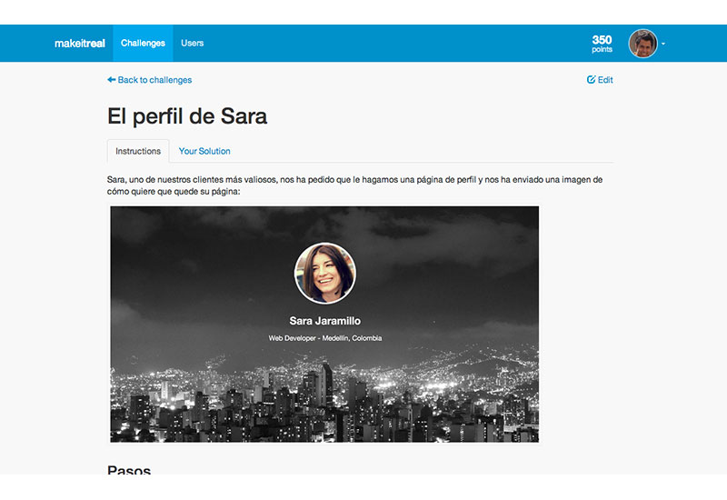
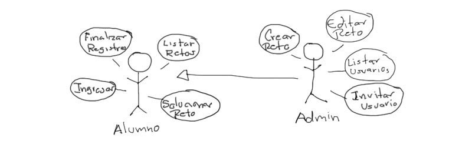
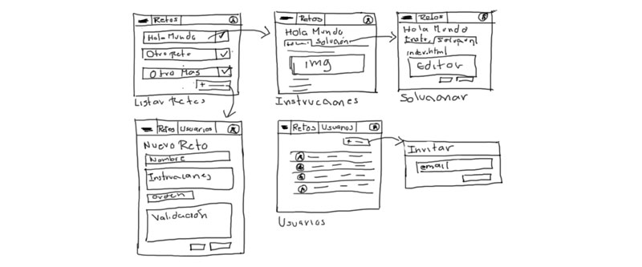
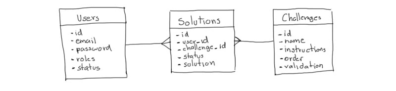

Diseñando un Producto Viable Mínimo
En los últimos días hemos estado trabajando sin descanso en Challenges, una aplicación para administrar los retos de programación que los alumnos de Make it Real tendrán que completar durante las 12 semanas del Bootcamp. En este post vamos a utilizar Challenges como ejemplo para explicar el proceso de diseño de un producto viable mínimo (PVM).

Challenges es una aplicación que se puede volver tan compleja como queramos (leaderboards, badges, tagging, integración a Github, manejo de archivos, y peer reviews, son solo algunas de las ideas que se me ocurren ahora) ¿Por dónde empezar?
El primer paso
Podríamos durar meses haciendo una especificación detallada de todas las funcionalidades que queremos implementar antes de escribir nuestra primera línea de código; es un error que cometen muchas empresas cuando están diseñando sus aplicaciones.
Una mejor estrategia es concentrarnos únicamente en la esencia de la aplicación, en aquellas funcionalidades críticas sin las que no existiría aplicación, en el producto viable mínimo. Después podemos agregar más funcionalidades y mejorar la implementación actual. Lo importante es entender que una aplicación Web es un sistema en constante evolución que nunca va a estar terminado.
Pero eso no quiere decir que debamos empezar a escribir nuestro código inmediatamente. Necesitamos al menos identificar quiénes van a utilizar nuestro producto (actores), qué puede hacer cada actor en nuestra aplicación (casos de uso), qué información necesitamos almacenar (diagrama de base de datos), y cómo se va a ver nuestra aplicación (wireframes).
Actores y casos de uso
Para Challenges identificamos dos actores: alumnos y administradores. La siguiente imagen muestra el diagrama de casos de uso:

Sí, existen herramientas para hacer estos diagramas, pero a veces lo único que se tiene a la mano es una servilleta y un bolígrafo.
Estos ocho casos de uso son los más importantes. Podríamos agregar más si quisiéramos pero con estos ocho podemos crear un producto viable mínimo. Los casos de uso más críticos son: crear reto y solucionar reto. Fueron los primeros que implementamos y en los que más nos enfocamos!
Hay varias estrategias para detallar los casos de uso. Lo mínimo es una descripción de los pasos que debe seguir el usuario para completar la acción, los datos que debe ingresar, y/o la información que va a recibir/visualizar.
Wireframes
Los wireframes son un boceto de la interfaz gráfica de nuestra aplicación y nos dan una idea de los diferentes elementos que necesitamos diseñar.

Lo más importante es no enfocarse en los detalles, solo en la funcionalidad. Por eso es preferible hacer cada pantalla de máximo 5cm x 5cm.
La base de datos
A partir de los casos de uso y wireframes nos damos una idea de la información que necesitamos almacenar. En nuestro caso son los usuarios, los retos, y las soluciones. La siguiente figura muestra el diagrama de base de datos.

Cada caja representa una tabla y sus columnas. Las líneas representan relaciones entre las tablas. En este caso, los retos y los usuarios están relacionados a través de las soluciones. También es necesario definir el tipo de datos de cada columna y una descripción más detallada de ser necesario.
¡Eso es todo! La implementación del PVM nos tomó aproximadamente 12 horas. La mayor parte de ese tiempo fue ajustando el editor embebido y encontrando la mejor forma de validar los retos ;) Desde entonces hemos estado trabajando en mejorar el diseño, la experiencia, y subiendo los retos al sistema. Pero en un futuro post publicaremos un video de cómo implementar este PVM.
El proceso de diseño de una aplicación Web puede ser tan básico e informal como lo hicimos acá, o tan sofisticado y formal como cada empresa lo considere necesario. Lo importante es concentrarse en la esencia de la aplicación y especificar lo mínimo necesario para la implementación, independientemente de quién vaya a escribir el código.
Si tienes un verdadero interés por la programación y quieres aprender a diseñar e implementar tus propias aplicaciones Web no dudes en aplicar a Make it Real!